건설재료시험산업기사 (2016-03-06 기출문제)
1과목: 콘크리트공학
1. 외기온도가 25℃ 미만인 경우 콘크리트 비비기로부터 타설이 끝날 때 까지의 시간은 몇 시간을 넘어서는 안 되는가?
- 1시간
- 1.5시간
- 2시간
- 2.5시간
(정답률: 83%)

2. 시방배합을 현장배합으로 수정할 때 고려할 사항은?
- 골재의 표면수
- 슬럼프값
- 굵은 골재의 최대치수
- 단위시멘트량
(정답률: 60%)
3. 실험에 의해 얻은 결합재-물비 (B/W)와 재령 28일 압축강도(f28)의 관계식이 아래의 표와 같고, 배합강도가 30MPa, 단위시멘트량이 320kg일 때 단위수량은? (단, 혼화재는 사용하지 않는다.)
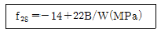
- 150kg
- 160kg
- 170kg
- 180kg
(정답률: 60%)
4. 압축강도시험의 기록이 없는 현장에서 설계기준압축강도 21MPa의 콘크리트를 제조하기 위한 배합강도는?
- 28MPa
- 29.5MPa
- 31MPa
- 32.5MPa
(정답률: 76%)
5. AE제를 사용했을 때 콘크리트에 미치는 영향에 대한 설명 중 틀린 것은?
- 워커빌리티가 개선된다.
- 단위수량이 감소된다.
- 내동해성이 향상된다.
- 블리딩이 증가한다.
(정답률: 81%)
6. 수밀 콘크리트에 대한 설명으로 틀린 것은?
- 수밀 콘크리트란 수밀성이 큰 콘크리트 또는 투수성이 큰 콘크리 트를 말한다.
- 수밀 콘크리트의 물-결합재비는 50% 이하를 표준으로 한다.
- 수밀 콘크리트의 워커빌리티를 개선시키기 위해 공기연행감수제 등을 사용하는 경우라도 공기량은 4% 이하가 되게 한다.
- 수밀 콘크리트의 소요 슬럼프는 180mm를 넘지 않도록 하며, 콘크리트의 타설이 용이할 때에는 120mm 이하로 한다.
(정답률: 58%)
7. 잔골재의 절대용적 290ℓ, 굵은골재 의 절대용적 510ℓ인 콘크리트의 잔골재율은?
- 29.0%
- 30.46%
- 36.25%
- 56.86%
(정답률: 66%)
8. 한중 콘크리트에 대한 설명으로 틀린 것은?
- 물-결합재비는 원칙적으로 60% 이 하로 한다.
- 하루의 평균기온이 4℃이하가 예상되는 조건일 때는 한중콘크리트로 시공하여야 한다.
- 타설할 때 콘크리트의 온도는 5~20℃의 범위로 한다.
- 믹서에 재료를 투입할 때 시멘트는 가장 먼저 투입하여야 한다.
(정답률: 52%)
9. 아래 표의 조건과 같을 경우 기초, 보, 기둥 및 벽의 측면 거푸집 해체가 가능한 기준이 되는 재령은?
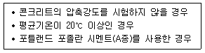
- 3일
- 4일
- 5일
- 6일
(정답률: 53%)
10. 콘크리트의 수축균열을 방지하기 위한 대책으로 옳지 않은 것은?
- 단위수량을 적게 사용한다.
- 분말도가 높은 시멘트를 사용한다.
- 양생을 충분히 한다.
- 철근을 많이 사용한다.
(정답률: 69%)
11. 다음 실험방법 중 콘크리트의 반 죽질기를 측정하는 시험이 아닌 것은?
- 블리딩 시험
- Vee Bee 시험
- 리몰딩 시험
- 슬럼프 시험
(정답률: 74%)
12. 경량골재 콘크리트에 대한 설명으 로 틀린 것은?
- 경량 잔골재는 절건밀도가 0.0018g/㎣ 미만인 것을 사용한다.
- 경량골재 콘크리트의 기건 단위질 량은 1400~2000kg/m3의 범위이다.
- 경량골재 콘크리트의 슬럼프는 일반적인 경우 대체로 50~180mm를 표준으로 한다.
- 경량골재 콘크리트의 단위 시멘트량의 최소값은 400kg/m3으로 한다.
(정답률: 58%)
13. 프리텐션 방식의 프리스트레스트 콘크리트에서 프리스트레싱할 때 의 콘크리트강도는? (단, 실험이나 기존의 실용실적 등을 통해 안전성이 증명도니 경우는 제외한다.)
- 30MPa 이상이어야 한다.
- 35MPa 이상이어야 한다.
- 40MPa 이상이어야 한다.
- 45MPa 이상이어야 한다.
(정답률: 52%)
14. 거푸집의 높이가 높을 경우, 거푸집에 투입구를 설치하거나 연직슈트 또는 펌프배관의 배출구를 타설면 가까운 곳까지 내려서 콘크리트를 타설하여야한다. 이 경우 슈트, 펌프배관의 배출구와 타설면까지의 높이는 원칙적으로 몇 m이하로 하여야 하는가?
- 1m
- 1.5m
- 2m
- 2.5m
(정답률: 74%)
15. 포장용 콘크리트의 배합기준으로 적절하지 않은 것은?
- 설계기준압축강도 : 30MPa 이상
- 단위수량 : 150kg/m3 이하
- 굵은 골재의 최대 치수 : 40mm 이하
- 슬럼프 : 40mm 이하
(정답률: 53%)
16. 압력법에 의한 굳지 않은 콘크리트의 공기량 시험을 실시한 결과 겉보기 공기량은 5.3%이고, 골재 수정계수는 0.8%이었다면 이 콘크리트의 공기량은?
- 6.1%
- 5.3%
- 4.5%
- 3.7%
(정답률: 76%)
17. 시공이음은 전단력이 적은 위치에 설치해야 하나, 부득이 하게 전단력이 큰 위치에 시공이음을 설치 할 경우 철근으로 보강할 수 있는데, 철근의 공칭직경이 19mm인 경우 철근의 최소 정착길이는?
- 190mm
- 285mm
- 380mm
- 475mm
(정답률: 70%)
18. 서중콘크리트에서 콘크리트를 쳐 넣을 때의 콘크리트의 온도는 최대 얼마 이하이어야 하는가?
- 20℃
- 25℃
- 30℃
- 35℃
(정답률: 68%)
19. 콘크리트의 장기거동을 지배하는 주요 현상인 크리프(creep)에 대하여 옳게 설명한 것은?
- 변형이 일정할 때 응력이 감소하는 현상이다.
- 하중이 제거되어도 크리프변형은 회복되지 않는다.
- 온도가 높을수록 크리프변형은 커진다.
- 재하시의 콘크리트 재령이 클수록 크리프가 많이 발생한다.
(정답률: 55%)
20. 콘크리트의 습윤양생에 대한 설명으로 틀린 것은?
- 일평균 기온이 15℃ 이상이고 보통포틀랜드시멘트를 사용한 콘크리트의 습윤양생 기간의 표준은 5일이다.
- 콘크리트는 타설한 후 습윤상태로 노출면이 마르지 않도록 하여야 하며, 수분의 증발에 따라 살수를 하여 습윤상태로 보호하여야 한다.
- 콘크리트는 타설할 후 거푸집판이 건조될 우려가 있는 경우라도 직접 살수하여서는 안된다.
- 막양생을 할 경우 막양생제는 콘크리트 표면의 물빛(水光)이 없어진 직후에 얼룩이 생기지 않도록 살포하여야 한다.
(정답률: 80%)
2과목: 건설재료 및 시험
21. 암석의 분류 중 화성암에 속하지 않는 것은?
- 화강암
- 현무암
- 안산암
- 대리석
(정답률: 70%)
22. 목재의 변재(邊材)와 심재(心材)에 관한 설명으로 옳은 것은?
- 나무줄기의 중앙부로서 비교적 밝은 색을 나타내는 부분을 변재라 한다.
- 여름과 가을에 걸쳐 성장한 부분 즉, 조직이 치밀하고 단단하며 색깔도 짙은 부분을 심재라고 한다.
- 변재는 심재보다 강도, 내구성 등이 작다.
- 심재는 다공질이며, 수액의 이동, 양분이 저장되는 곳이다.
(정답률: 75%)
23. 다음의 석재 중 압축강도가 가장 작은 것은?
- 화강암
- 현무암
- 응회암
- 안산암
(정답률: 71%)
24. 시멘트의 화합물에 대한 설명 중 옳지 않은 것은?
- 알루민산 3석회는 초기응결이 빠르고 수축이 커서 균열이 잘 일어난다.
- 규산 2석회는 수화열이 작으므로 수축이 작으며 장기 강도가 크다.
- 규산 3석회는 초기강도를 좌우하며 응결이 빠르다.
- 알루민산철 4석회는 수화속도가 빠르고 수화열이 많아 수축이 크다.
(정답률: 56%)
25. 토목섬유에 대한 설명으로 옳지 않은 것은?
- 토목섬유는 내구성이 강하고 자외선 및 일광에 대한 저항성이 커야한다.
- 지오텍스타일(geotextile)섬유는 주로 폴리에스테르와 폴리프로필렌 섬유가 사용되며 분리기능, 여과기능, 보강기능이 있다.
- 지오멤브레인(geomembrane)섬유는 격자모양의 그리드 형태로 표면에 구멍이 많은 형태로서 배수기능, 여과기능이 있다.
- 지오컴포지트(geocomposite)는 두개 이상 토목 섬유를 결합하여 기능을 복합적으로 향상시킨 것으로, 주로 매트 기초용으로 사용된다.
(정답률: 63%)
26. 아래의 표에서 설명하는 폭약은?
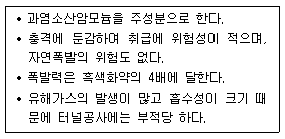
- 칼릿
- 니트로글리세린
- 다이너마이트
- 질산암모늄계 폭약
(정답률: 73%)
27. 밀도가 큰 골재를 사용했을 때의 일반적인 특성과 관계가 없는 것은?
- 내구성이 좋아진다.
- 흡수성이 증대된다.
- 동결에 의한 손실이 줄어든다.
- 강도가 증가한다.
(정답률: 62%)
28. 포졸란(pozzolan)을 사용한 콘크리트의 특징이 아닌 것은?
- 수밀성이 크다.
- 건조수축이 작다.
- 발열량이 적다.
- 워커빌리티가 좋다.
(정답률: 37%)
29. 조강 포틀랜드 시멘트에 대한 설명으로 옳은 것은?
- 수화열이 높으므로 매스 콘크리트에 좋다.
- 응결시 수화열이 높으므로 장기 강도가 높다.
- 건조수축이 적어 중용열 시멘트와 같은 용도로 쓰인다.
- 저온에서도 강도 발현이 좋으므로 한중 콘크리트에 사용하면 좋다.
(정답률: 61%)
30. 철근에 대한 설명으로 틀린 것은?
- SD300으로 표시되는 철근은 철근의 인장강도가 300N/mm2임을 나타낸다.
- 이형 철근은 열간 압연에 의해 제조한다.
- 부착강도를 증진시키기 위해 표면에 요철을 붙인 이형철근을 주로 사용한다.
- 이형철근의 공칭 단면적은 공칭 지름의 원형평면 바(bar)의 면적과 같은 면적으로 나타낸다.
(정답률: 70%)
31. 굵은골재의 표면건조 포화상태 질량이 2180g 이고, 물속에서의 질량 1380g 이었으며 절대건조 상태 질량이 2100g 이었다면 이 골재의 표면 건조 포화상태의 밀도 는? (단, 시험온도에서의 물의 밀도는 1g/cm3이다.)
- 2.50g/cm3
- 2.61g/cm3
- 2.73g/cm3
- 2.81g/cm3
(정답률: 43%)
32. 아스팔트 혼합물을 배합 설계할 때 필요치 않은 사항은?
- 침입도와 흐름값의 측정
- 골재의 입도 측정
- 응결시간의 측정
- 마샬(marshall)안정도 시험
(정답률: 54%)
33. 혼화재료의 일반적인 사용목적이 아닌 것은?
- 콘크리트 워커빌리티를 개선한다.
- 강도 및 내구성을 증진시킨다.
- 응결, 경화 시간을 조절한다.
- 발열량을 증대시킨다.
(정답률: 76%)
34. 아래의 표에서 설명하고 있는 다이나마이트는?
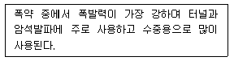
- 분상 다이나마이트
- 교질 다이나마이트
- 규조토 다이나마이트
- 스트레이트 다이나마이트
(정답률: 89%)
35. 재료의 역학적 성질에 대한 설명으로 틀린 것은?
- 소성 : 외력을 받아서 변형한 재료가 외력을 다시 제거하면 원형으로 돌아가는 성질을 말한다.
- 탄성계수 : 어떤 재료가 비례한도 내에서 외력 P를 받아 길이변화를 일으켰을 때의 응력과 변형률의 비를 말한다.
- 포아송비 : 탄성체에 인장력이나 압축력이 작용하면 그 응력의 방향이나 직각의 횡방향에 변형이 생기며, 이들 두 변형률의 비를 말한다.
- 강성 : 외력을 받아도 변형이 적게 일어나는 성질을 말한다.
(정답률: 69%)
36. 다음 시멘트 중에서 조기강도가 큰 순서대로 이루어진 것은?
- 보통포틀랜드시멘트 ＞ 고로시멘트 ＞ 알루미나시멘트
- 알루미나시멘트 ＞ 보통포틀랜드시멘트 ＞ 고로시멘트
- 고로시멘트 ＞ 알루미나시멘트 ＞ 보통포틀랜트시멘트
- 보통포틀랜드시멘트 ＞ 알루미나시멘트 ＞ 고로시멘트
(정답률: 79%)
37. 잔골재의 절대건조상태의 질량이 250g, 공기 중 건조상태의 질량이 260g, 표면건조포화상태의 질량이 280g, 습윤상태의 질량이 300g일 때 흡수율과 표면수율은?
- 흡수율=12%, 표면수율=7.1%
- 흡수율=7.7%, 표면수율=15.4%
- 흡수율=12%, 표면수율=15.4%
- 흡수율=7.7%, 표면수율=7.1%
(정답률: 58%)
38. 다음의 아스팔트 중 주로 도로, 활주로 등의 포장용 혼합물의 결합 재로 쓰이는 것은?
- 스트레이트 아스팔트
- 블론 아스팔트
- 레이크 아스팔트
- 아스팔타이트
(정답률: 69%)
39. 시멘트의 강도 시험(KS L ISO 679)에 따라 시멘트 모르타르의 압축강도 시험을 실시하고자 할 때 모르타르의 제조 방법으로 옳은 것은?
- 질량에 의한 비율로 시멘트와 표준사를 1:2의 비율로 하며, 물 - 시멘트비는 40%로 한다.
- 질량에 의한 비율로 시멘트와 표준사를 1:2.45의 비율로 하며, 물 - 시멘트비는 50%로 한다.
- 질량에 의한 비율로 시멘트와 표준사를 1:2.7의 비율로 하며, 물 - 시멘트비는 40%로 한다.
- 질량에 의한 비율로 시멘트와 표준사를 1:3의 비율로 하며, 물 -시멘트비는 50%로 한다.
(정답률: 81%)
40. 그라우팅용 혼화제의 필요한 성질에 대한 설명으로 틀린 것은?
- 단위수량이 작고, 블리딩이 작아야한다.
- 그라우트를 수축시키는 성질이 있어야 한다.
- 재료의 분리가 생기지 않아야 한다.
- 주입하기 쉬워야 하며, 공기를 연행시켜야 한다.
(정답률: 81%)
3과목: 건설시공학
41. 아래의 표에서 설명하는 아스팔트 포장의 파손을 무엇이라고 하는가?
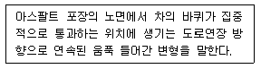
- 라벨링(Ravelling)
- 소성변형(Rutting)
- 팻칭(Patching)
- 균열(Crack)
(정답률: 45%)
42. 아래의 표에서 설명하는 댐은?
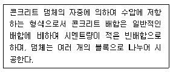
- 콘크리트 중력댐
- 롤러다짐 콘크리트댐
- 월류댐
- 록필댐
(정답률: 60%)
43. 발파에서 자유면이 많으면 발파효율이 커지므로 자유면을 증가시킬 목적으로 실시되는 발파는?
- 시험발파
- 조절발파
- 심빼기 발파
- 직접발파
(정답률: 64%)
44. 다음 절토단면도에서 길이 30m에 대한 토량을 구하면?
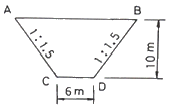
- 4300m3
- 5300m3
- 6300m3
- 7300m3
(정답률: 49%)
45. 성토재료의 요구조건에 대한 설명으로 틀린 것은?
- 비탈면의 안정에 필요한 전단강도를 보유할 것
- 투수계수가 작을 것
- 유기질토를 많이 함유할 것
- 시공장비의 주행성이 확보될 것
(정답률: 61%)
46. 보통 흙을 불도저로 작업할 때 작업거리가 40m이다. 이때 시간당 작업량은? (단, 전진속도 40m/min, 후진속도 100m/min, 기어조작시간 0.3분, 배토판 용량 2.0m, 작업효율 0.6, 토량환산계수(f) 0.8이다.)
- 33.88m3
- 42.50m3
- 48.25m3
- 50.32m3
(정답률: 42%)
47. 토공의 굴착작업에 사용하는 기계로서 적당하지 않은 기계는?
- 스태빌라이저(Stabilizer)
- 백호우(Back Hoe)
- 트렌처(Trencher)
- 크램셀(Clam Shell)
(정답률: 51%)
48. 암반굴착 시 제어발파를 실시하는 효과와 거리가 먼 것은?
- 낙석위험이 적다.
- 버력운반량이 많다.
- 암석면이 매끈하다.
- 복공콘크리트양이 절약된다.
(정답률: 68%)
49. 콘크리트댐의 시공에 관한 설명으로 옳지 않은 것은?
- 시멘트는 수화열이 큰 것을 사용한다.
- 일반적으로 1리프트의 높이는 1.5m정도로 한다.
- 수평 시공이음 방법에는 경화전처리법과 경화후 처리법이 있다.
- 콘크리트 냉각은 Pipe Cooling과 Pre-Cooling을 실시한다.
(정답률: 55%)
50. 강관이나 벤토나이트 용액을 사용하지 않고, 정수압으로 구멍의 벽을 보호하며, 지름이 큰 말뚝의 시공에 알맞은 현장치기 콘크리트 말뚝 공법은?
- 리버스 서큘레이션 공법
- 어스 오거 공법
- 어스 드릴 공법
- 베노토 공법
(정답률: 50%)
51. PERT기법에 의한 공정 관리 방법에서 낙관적인 시간이 6일, 정상시간이 10일, 비관적 시간이 8일 인 경우 공정상의 기대시간은?
- 8일
- 9일
- 12일
- 13일
(정답률: 64%)
52. 네트워크 공정표의 장점에 대한 설명으로 틀린 것은?
- 중점관리가 된다.
- 수정이 쉽다.
- 전체와 부분의 관련을 잘 알 수 있다.
- 기자재, 노무 등 배치인원 계획을 합리적으로 할 수 있다.
(정답률: 49%)
53. 제작장에서 한 세그먼트씩 제작 후 압출잭(jack)을 사용하여 밀어내기 하는 교량 가설공법은?
- FSM공법
- ILM공법
- MSS공법
- FCM공법
(정답률: 45%)
54. 도로는 동결융해 작용으로 인하여 도로 포장이 파손되지 않아야 한다. 이를 위한 동해방지 대책공법으로 적합하지 않은 것은?
- 동결온도를 낮추기 위하여 지표부의 흙을 화학약제로 처리하여 동결을 일으키지 않도록 할 것
- 지하수위를 낮추어 동상에 필요한 공급수를 차단하고, 쌓기를 하여 같은 효과를 얻도록 할 것
- 동결깊이까지 실트질의 흙으로 치환하여 동결을 일으키지 않도록 할 것
- 단열층을 설치하여 동결을 일으키지 않도록 할 것
(정답률: 65%)
55. 터널에 있어서 인버트 아치를 필요로 하는 경우는?
- 용수가 많은 터널에서
- 구배가 큰 터널에서
- 지질이 연약하고 나쁜 터널에서
- 복공 콘크리트 비를 절약하려는 경우
(정답률: 76%)
56. 역 T형 교대를 설계할 경우 주철근으로 설계하는 위치를 제시한 것이다. 다음 그림에서 주철근이 아닌 것은?
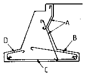
- A
- B
- C
- D
(정답률: 73%)
57. 연약 지반에 성토를 할 때 기초의 활동을 막기 위하여 사용하는 공법은?
- 치환 공법
- 언더피닝 공법
- 강제 치환 공법
- 압성토 공법
(정답률: 56%)
58. 배수 불량의 원인으로 틀린 것은?
- 하천의 수위가 배수로 바닥보다 높을 때
- 자연배수의 하천경사가 완만하여 배수단면이 부족할 때
- 배수로 주변 토지의 지반이 낮고, 평탄하며 면적이 클 때
- 지표의 하층토가 투수성이고, 지하수위가 낮을 때
(정답률: 53%)
59. 점성토를 다짐하는 기계로서 다음 중 가장 부적합한 것은?
- sheeps foot roller
- grid roller
- tapper foot roller
- vibration roller
(정답률: 55%)
60. 공기 케이슨(pneumatic caisson)의 장점에 대한 설명으로 틀린 것은?
- 장애물 제거가 쉽다.
- 히빙, 보일링을 방지할 수 있으므로 인접 구조물의 침하우려가 없다.
- 이동경사가 적고 경사수정이 쉽다.
- 시공깊이에 제한을 받지 않는다.
(정답률: 62%)
4과목: 토질 및 기초
61. 압밀계수(cv)의 단위로서 옳은 것은?
- cm/sec
- cm2/kg
- kg/cm
- cm2/sec
(정답률: 52%)
62. 유선망의 특징에 관한 다음 설명 중 옳지 않은 것은?
- 각 유로의 침투수량은 같다.
- 유선과 등수두선은 서로 직교한다.
- 유선망으로 되는 사각형은 이론상으로 정사각형이다.
- 침투속도 및 동수경사는 유선망의 폭에 비례한다.
(정답률: 54%)
63. 그림과 같은 모래지반의 토질실험 결과 내부마찰각 ø=30°, c=0 일 때 깊이 4m되는 A점에서의 전단 강도는?(오류 신고가 접수된 문제입니다. 반드시 정답과 해설을 확인하시기 바랍니다.)
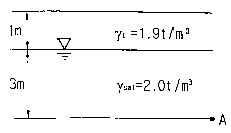
- 1.25t/m2
- 1.72t/m2
- 2.17t/m2
- 2.83t/m2
(정답률: 43%)
64. 가로 2m, 세로 4m의 직사각형 케이슨이 지중 16m까지 관입되었다. 단위면적당 마찰력 f=0.02t/m2 일 때 케이슨에 작용하는 주면마찰력(skin friction)은?
- 2.75t
- 1.92t
- 3.84t
- 1.28t
(정답률: 31%)
65. 흙에 대한 일반적인 설명으로 틀린 것은?
- 점성토가 교란되면 전단강도가 작아진다.
- 점성토가 교란되면 투수성이 커진다.
- 불교란시료의 일축압축강도와 교란시료의 일축압축강도와의 비를 예민비라 한다.
- 교란된 흙이 시간경과에 따라 강도가 회복되는 현상을 딕소트로피(Thixotropy)현상이라 한다.
(정답률: 35%)
66. 충분히 다진 현장에서 모래 치환 법에 의해 현장밀도 실험을 한 결 과 구멍에서 파낸 흙의 무게가 1536g, 함수비가 15%이었고 구멍 에 채워진 단위중량이 1.70g/cm3인 표준모래의 무게가 1411g이었다. 이 현장이 95% 다짐도가 된 상태가 되려면 이 흙의 실내실험실에서 구한 최대 건조단위 중량 (γdmax)은?
- 1.69g/cm3
- 1.79g/cm3
- 1.85g/cm3
- 1.93g/cm3
(정답률: 36%)
67. 표준관입시험에 관한 설명으로 틀린 것은?
- 해머의 질량은 63.5kg이다.
- 낙하고는 85cm이다.
- 표준 관입 시험용 샘플러를 지반에 30cm 박아 넣는 데 필요한 타격 횟수를 N 값이라고 한다.
- 표준관입시험값 N은 개략적인 기초 지지력 측정에 이용되고 있다.
(정답률: 55%)
68. 말뚝의 평균 지름이 140cm, 관입 깊이 15m일 때 군말뚝의 영향을 고려하지 않아도 되는 말뚝의 최소 간격은?
- 약 3m
- 약 5m
- 약 7m
- 약 9m
(정답률: 38%)
69. 내부마찰각 ø=0°인 점토에 대하여 일축압축시험을 하여 일축압축 강도 qu=3.2kg/cm2을 얻었다면 점착력 c는?
- 1.2kg/cm2
- 1.6kg/cm2
- 2.2kg/cm2
- 6.4kg/cm2
(정답률: 65%)
70. 여러 종류의 흙을 같은 조건으로 다짐시험을 하였을 경우 일반적으로 최적함수비가 가장 작은 흙은?
- GW
- ML
- SP
- CH
(정답률: 54%)
71. 일축압축강도가 0.32kg/cm2, 흙의 단위중량이 1.6t/m3이고, ø=0인 점토지반을 연직 굴착할 때 한계 고는?
- 2.3m
- 3.2m
- 4.0m
- 5.2m
(정답률: 38%)
72. 정지토압 Po, 주동토압 Pa, 수동 토압 Pp의 크기순서가 올바른 것은?
- Pa ＜ Po ＜ Pp
- Po ＜ Pp ＜ Pa
- Po ＜ Pa ＜ Pp
- Pp ＜ Po ＜ Pa
(정답률: 53%)
73. 분사현상(quick sand action)에 관 한 그림이 아래와 같을 때 수두차 h를 최소 얼마 이상으로 하면 모래시료에 분사 현상이 발생하겠는가? (단, 모래의 비중 2.60, 간극률 50%)
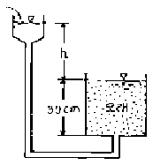
- 6cm
- 12cm
- 24cm
- 30cm
(정답률: 44%)
74. 동해(凍害)는 흙의 종류에 따라 그 정도가 다르다. 다음 중 가장 동해가 심한 것은?
- Colloid
- 점토
- Silt
- 굵은 모래
(정답률: 65%)
75. 모래의 내부마찰각 ø와 N치와의 관계를 나타낸 Dunham의 식 ø=
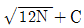
에서 상수 C의 값 이 가장 큰 경우는?- 토립자가 모나고 입도분포가 좋을 때
- 토립자가 모나고 균일한 입경일 때
- 토립자가 둥글고 입도분포가 좋을 때
- 토립자가 둥글고 균일한 입경일 때
(정답률: 53%)
76. 포화도 75%, 함수비 25%, 비중 2.70일 때 간극비는?
- 0.9
- 8.1
- 0.08
- 1.8
(정답률: 41%)
77. 말뚝의 부마찰력에 대한 설명으로 틀린 것은?
- 말뚝이 연약지반을 관통하여 견고 한 지반에 박혔을 때 발생한다.
- 지반에 성토나 하중을 가할 때 발생한다.
- 지하수위 저하로 발생한다.
- 말뚝의 타입 시 항상 발생하며 그 방향은 상향이다.
(정답률: 60%)
78. 아래 그림과 같은 수중지반에서 Z 지점의 유효연직응력은?
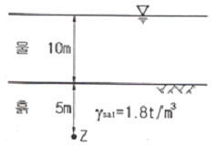
- 2t/m2
- 4t/m2
- 9t/m2
- 14t/m2
(정답률: 48%)
79. 흙의 입도시험에서 얻어지는 유효입경(有效粒經:D10)이란?
- 10mm체 통과분을 말한다.
- 입도분포곡선에서 10% 통과 백분율을 말한다.
- 입도분포곡선에서 10% 통과 백분율에 대응하는 입경을 말한다.
- 10번체 통과 백분율을 말한다.
(정답률: 56%)
80. 말뚝의 허용지지력을 구하는 Sander의 공식은? (단, Ra:허용지지력, S:관입량,WH:해머의 중량, H:낙하고)
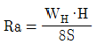
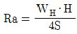
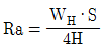
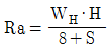
(정답률: 50%)